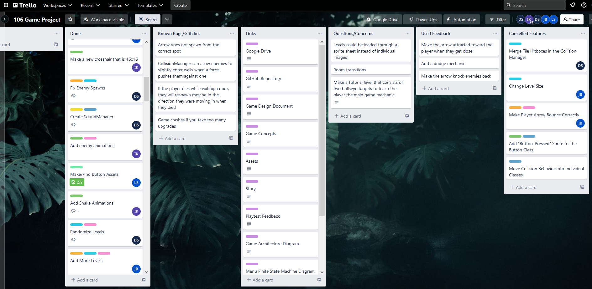

About
Crossboa is a 2d action roguelike that takes place within an ancient temple. Slithering around in the forest, you've discovered an old temple deep within the trees. Within its walls was a small crossbow. As a snake does, you decided to pick it up. Suddenly, you felt the floor begin to tremble! The walls behind you began to rise as a horde of monsters flooded in to defend the temple. Luckily, the crossbow came with an arrow! Only one, though. And can you even use it without any arms? You can probably make it work.
This game was created in the MonoGame engine, which is an offshoot of the Xna framework. This project was made in a group of 4 people as part of an introductory programming course for C#.
Timeframe: February 2022 - April 2022
Development

Our class architecture was well thought out, and really helped us in the early stages of the project. As this project started early in the course, we naturally learned about more features of both MonoGame and C++, so this doesn't represent what our game looked like by the end of development. Some classes were culled of content through the use of interfaces and structs, while in other cases it was decided that more specialized child objects of game classes were necessary to give more function to different objects. Such was the case with projectiles and level tiles. Very early on, we also ended up creating a Physics Manager, to round out a trio of managers to aid the game loop, with the later additions of a Stats, Sound, Spawn, and Camara managers. In retrospect we did have a pretty good idea of the complexity that each class would have, and all the functions we predicted we would need, we did need, along with a few more added to most classes for various reasons. We did have some suprises even in that regard. We expected the Collision Manger to be our largest and most complicated class, and it did come at least 2nd in that regard. The Level Manager became a monster and ended up quadrupling it's size. It would have been even larger if we didn't decide to have a separate Spawn Manager. The only part of our architecture that was removed altogether was the GameManager class, as all of it's contents ended up being either better suited to being tracked by other classes, or better suited to being decided by polymorphism.
Figuring out how the game would actually work was an entirely separate challenge, though we quickly found that finite state machines were integral in keeping everything well organized. This applied to the core gameplay loop as well, and we took care to figure out which options the player would have at each stage of the game. This helped us to catch bugs before they happened and prevented us from losing track of the direction of the game.
Communication was key in making sure everything went as planned. We organized a time to meet in person each week and work on the game toghether. That's where we made big decisions and planned out the direction of the game. Most of the game was developed on our own time, seperately. All of our files were kept in github to allow everyone access to anything. The main way we kept track of our progress was through Trello, which is a list-making and organization board. We kept track of what would need to be done over time, and could add or remove details as plans changed. Each of us could also claim ownership of a task, which prevented two people from working on the same thing. It made development of the game simple and efficient.
Role
For this project, I worked as one of two main programmers (though all 4 of us programmed some parts of it), and partially as a designer. Most of what I did was based around Collision and Level managment. I programmed, the Collion Manager, Level Manager, and Spawn Manager and all of their functions. This includes, the organization of rooms, the spawning of enemies, loading in level configurations from text files, spawning and destroying doors, and creating a screen transition with the camera. All of these systems had different challenges and nuances as well, such as making sure enemies can't spawn in the immediate vicinity of a door the player is entering. I also handles difficulty scaling as the player progresses through the game by limiting more difficult enemies in the early stages and restricting how many can spawn on each stage. I also generally handled code cleanup and optimization throughout most of the classes.
In addition to the above, I also created the Sound Manager, and was in charge of all music and sfx located within the game. This was a relatively simple process, with most of the work being optimizing files sizes. All music and sfx were pulled from and credited to users on Itch.io, with the exception of the title theme: Canopy Cacophony, which I composed and edited myself. In addition to sound, I used text files to save players settings after closing and reopening the game.